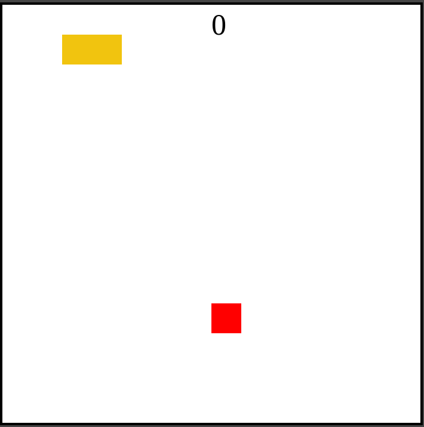
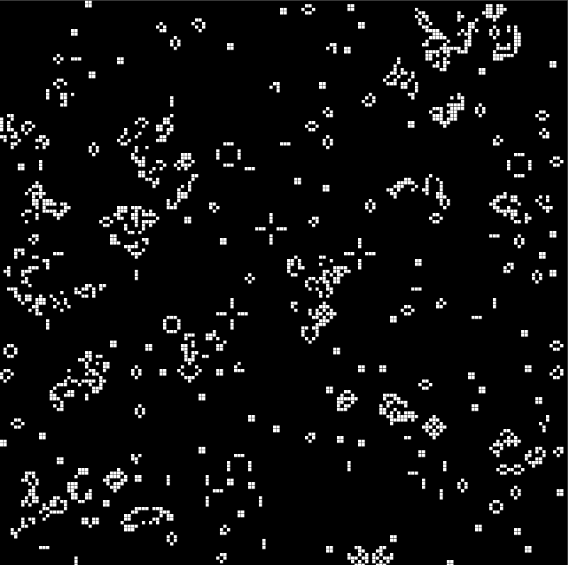
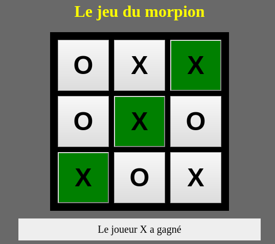
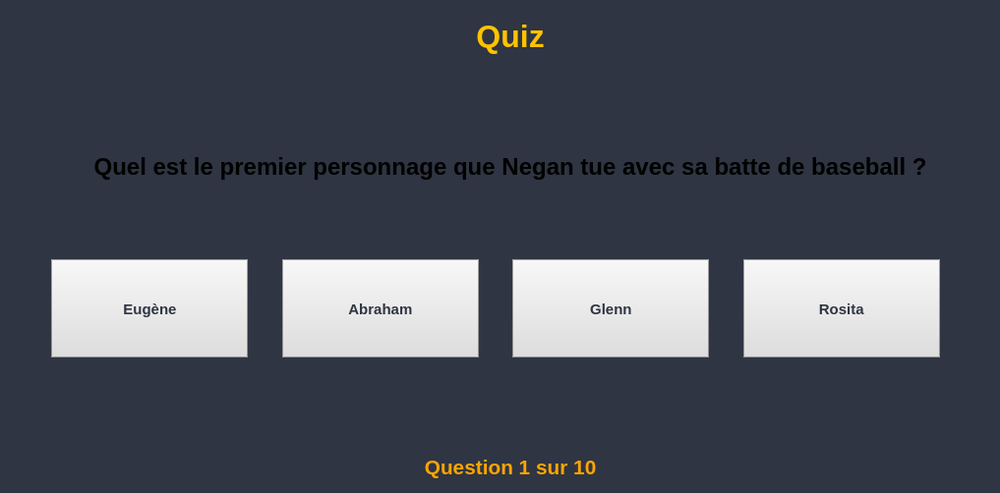
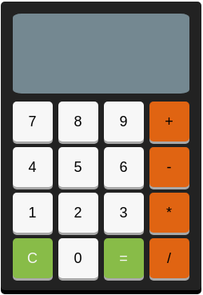
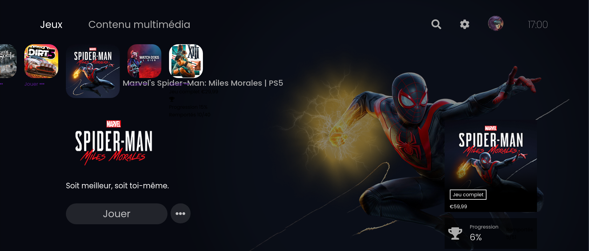
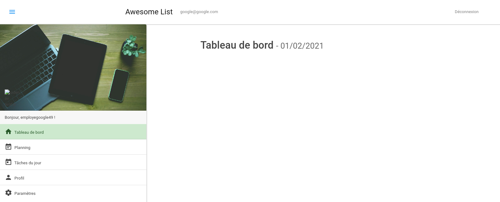
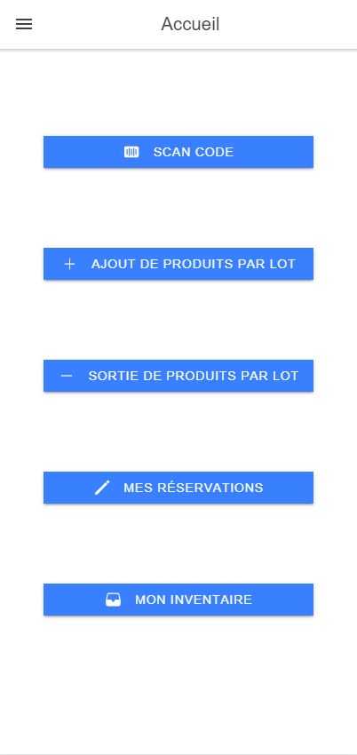

Introduction
Je m'appelle Justin Bellanger j'ai 23 ans et je vis près d'Angers. j'aime lire, faire du sport (courrir, nager), jouer au jeux vidéos, regarder des films et des séries et pleins d'autres choses. Je suis quelqu'un de timide et reserver mais curieux, persévérant et j'ai l'envie d'apprendre.
J'ai eu une scolarité je dirais faite d'hésitation et de doutes sur mes choix d'orientation. Je vais commencer à parler de mon parcours au lycée qui est banal une seconde générale et technologique. Puis j'ai voulu continuer dans le domaine de l'architecture avec une 1ère STI2D en architecture et construction, la c'est la 1ère fois que j'hésite sur mon parcours, je me dit que l'architecture à beau être intéressante je trouve qu'il y a beaucoup de théorie de choses à connaitre sur les matériaux, les types d'architectures etc... Je fait un autre choix d'orientation plus atypique dans mon cas, métier manuel, il s'agit de la mécanique automobile. Je m'inscrit dans le lycée qui fait la formation, étant donner que j'avais déjà fait une seconde on m'à dit que je pouvais directement reprendre en 1ère, condition je dois récupérer les 7 semaines de stage que j'étais censé faire en seconde. Le stage se passe bien, j'apprend des choses mais je me sentais vraiment pas à ma place dans ce milieu, à la fin du stage je me désinscrit de la formation, je me retrouve sans rien ni école ni formation.
Il me semble qu'après ça j'ai été voir un consiller d'orientation au CIO à Angers, le même que j'avais en seconde, on parle et je me dis pourquoi pas les métiers du numérique et l'informatique. Je m'inscrit donc au Lycée Saint-Aubin-la-Salle à Angers pour une 1ère STI2D option systèmes d'information et numérique.
Formations
Mon parcours lycée commence de 2015 à 2017 ou j'ai fait un Bac Techno STI2D option Systèmes d'Information et Numérique. Cette option nous amenait à étudier les méthodes de transmission avec le numérique. J'y ai étudier aussi les cartes électroniques (les composants et leur rôle dans la carte).
De 2017 à 2019, j'ai poursuivis mes études dans la continuité de mon cursus BAC avec un BTS Systèmes Numériques option A : Informatique et Réseaux. Dans ce BTS scindé principalement en 2 parties (partie dèv logiciel et partie réseaux), en dèv logiciel on apprenait les langages C/C++, le concept de programmation orienté objet, les classes etc... En réseaux (partie très théorique), j'ai vu l'adressage ip (plage d'adresse disponible), différent protocoles (ARP, IMCP, TCP/IP), on a aussi vu la plannification et la gestion de projet.
Du 09/03/2020 au 15/06/2020, en plein pendant la période du confinement j'ai fait une formation de développeur web avec l'école O'Clock en 100% à distance de chez moi. Durant la formation, j'ai appris les langages côté front (Html, CSS, JavaScript) et côté back (PHP et MySql) mais aussi Bootstrap, j'ai également vu plusieurs concept tel que la programmation Orienté Objet, l'architecture Model Vue Controleur, les API et aussi GIT le logiciel de versionning.
Expériences
Acoss Nancy

Dans le cadre de mon BTS, j'ai effectué un stage me permettant d'acquérir de l'expérience mais aussi de rentrer plus en profondeur dans le monde de l'entreprise. Le stage c'est fait à l'Acoss Nancy, une entreprise qui gère et traîte informatiquement les dossiers des clients Urssaf. La refonte du site se faisait à l'aide d'Angular le Framework Front-end de Google, j'ai pendant une semaine et demi et un peu avant le stage pratiquer Angular car je le rappel je n'avais à par Html/CSS que j'ai appris par moi-même aucune connaissance en développement web avec mon BTS qui était orienté dèv logiciel et réseaux. J'étais avec une autre stagiaire qui était elle en licence informatique, nous avons d'abord fait le tutoriel la tour des héros qui avait pour but de nous amener à découvrir les notions/concepts d'Angular comme les routes, composants, modules etc..., puis nous nous sommes lancé dans le sujet. Ce stage m'à conforter dans l'idée de vouloir faire du développement web.
Candé Fruit

Après l'obtention de mon BTS, ce que j'avais envie de faire était de me m'inscrire dans une formation de développeur web, j'ai cherché du travail en attendant de trouver la formation qui me correspond le mieux. J'ai lu dans le courrier de l'ouest que la société Candé Fruit possède 3 verger, à Candé au Lyon d'Angers et à Landremont et qu'ils cherchaient du monde. J'ai reçu une réponse positive de la par de Candé, mon contrat CDD commençait le 22 Août et se terminait en fonction de la saison. Je faisais 7H/jour pour ma première semaine et 8H/jour les semaines suivantes. On cueillait principalement au sol, mais il m'est arriver de cueillir sur machine pour attraper les pommes en hauteur. Mon contrat à pris fin le 30 Septembre.
MacDonald's

Toujours en recherche de formation et après avoir finis mon contrat avec Candé Fruit, je cherche à nouveau un job, MacDo s'est souvenu que j'avais postulé sur leur site et ils m'ont rappelé. Le contrat à commencer le 05/11/20 et est un CDI de 24H/sem en temps partiel. L'équipier polyvalent est capable de savoir à terme tout faire dans le restaurant, de l'encaissement, de la préparation de sandwich, cuisson, prendre les commandes au drive etc... Au début j'étais principalement sur le garnissage des burgers, puis j'ai fait la plonge, le nettoyage, le service à table et la préparation des boissons et des glaces. La fin de ma période d'essai c'est achevé le 02/01/2020. J'ai finis par touvé O'Clock une école faisant des formations en développement web, j'ai commencé le 09/03/20 voir la rubrique Formations ci-dessus, ci-dessous vous pourrez trouver ce que j'ai fait comme mini-projet avec O'Clock.
Travaux
OShop

Description : OShop est une conception de boutique en ligne permettant d'acheter des articles en fonction d'une catégorie, marque, type de produit sélectionner, vous pouvez voir sur la page d'accueil 5 catégories de produits, ainsi que les produits associés à cette catégorie, vous pouvez voir également la fiche du produit en détail.
Outils et Technologies pratiqués:
OBlog

Description: OBlog est une conception de site permettant de mettre des articles, c'est une sorte de blog collaboratif, les articles sont listés selon une catégorie et un auteur, vous pouvez également sélectionner un auteur pour voir tout les articles qu'il a écrit, ainsi qu'une catégorie pour voir quel article y est associé.
Outils et Technologies pratiqués:
Kiemtao

Description: Kiemtao est un site permettant de s'inscrire à un formulaire pour ajouter s'est humeurs, un mode #fof disponible(comme le mode sombre sur twitter mais flashy).
Outils et Technologies pratiqués:
TodoList

Description: Le site TodoList permet d'ajouter des choses à faire, vous pouvez les archiver, les supprimer, c'est une sorte de pense-bête ou d'aide mémoire.
Outils et Technologies pratiqués:
Invaders

Description: Space Invaders permet de choisir son modèle à afficher en cliquant sur des boutons.
Outils et Technologies pratiqués:
Snake

Description: Le jeu du serpent est un jeu ou le serpent représentée par le rectangle jaune doit manger le fruit représentée par le carré rouge, si le fruit est manger le score du joueur augmente de 1, si le serpent se mord la queue où se prend un des murs, le jeu recommence à 0.
Outils et Technologies pratiqués:
Game Of Life

Description: Le jeu de la vie est un jeu qui nécessite l'intervention d'aucun joueur lors de son déroulement, une cellule possède 8 voisins qui sont ses cellules adjacentes, à chaque étape l'évolution d'une cellule est déterminée par l'état de ses 8 voisins.
Outils et Technologies pratiqués:
Morpion

Description: Le morpion ou tic-tac-toe est un jeu se jouant à 2 joueurs sur un carré de 3*3 cases, les joueurs doivent mettre des symboles, soit X soit O, un joueur gagne quand une des colonnes, lignes ou diagonale est remplie par trois mêmes symboles.
Outils et Technologies pratiqués:
Quiz Série Télé

Description: L’utilisateur répond aux 10 questions du quiz, à la fin le jeu vous donnes votre nombre de bonnes réponses.
Outils et Technologies pratiqués:
Calculette

Description: Représentation d’une calculatrice permettant de faire des opérations simples, additionner, soustraire, multiplier et diviser.
Outils et Technologies pratiqués:
Interface PS5

Description: L'interface représente la page d'accueil de la PS5, l'image de fond change en fonction de la vignette cliqué.
Outils et Technologies pratiqués:
Awesome-list

Description: Site permettant de gérer sa productivité et créer son agenda avec un planning, chaque utilisateur peut se connecter avec son compte et accéder à son propre agenda
Outils et Technologies pratiqués:
GSE-Web-mobile

Description: L'application GSE Web Mobile est un complément au site GSE Web permettant à l'utilisateur s'ayant inscrit sur le site de visualiser les commandes de pièces ou d'équipements qu'il aura passé, il pourra aussi accèder à son inventaire et suivre sa commande, il pourra scanner un produit q'il pourra commander par la suite.
Outils et Technologies pratiqués: